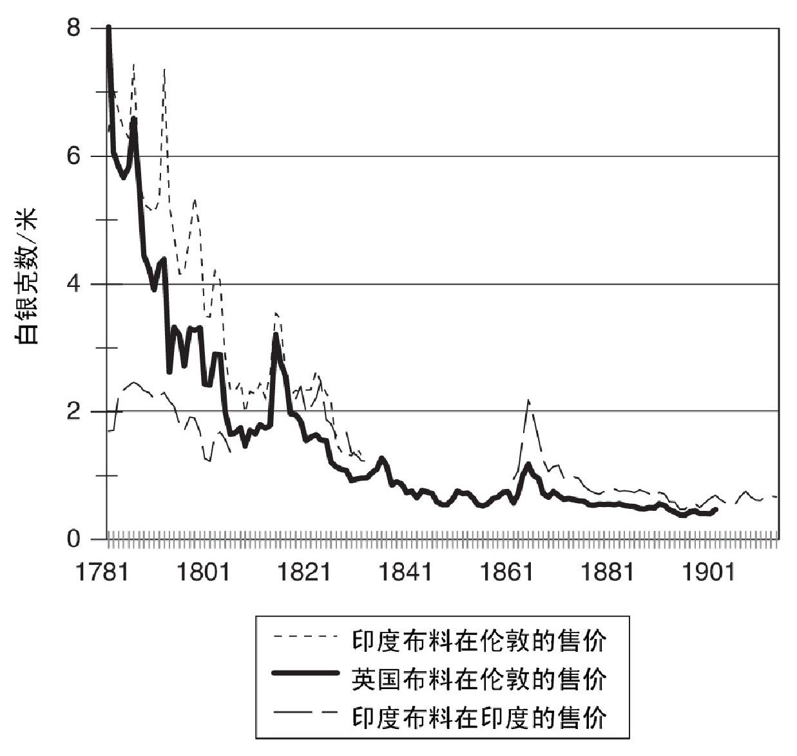
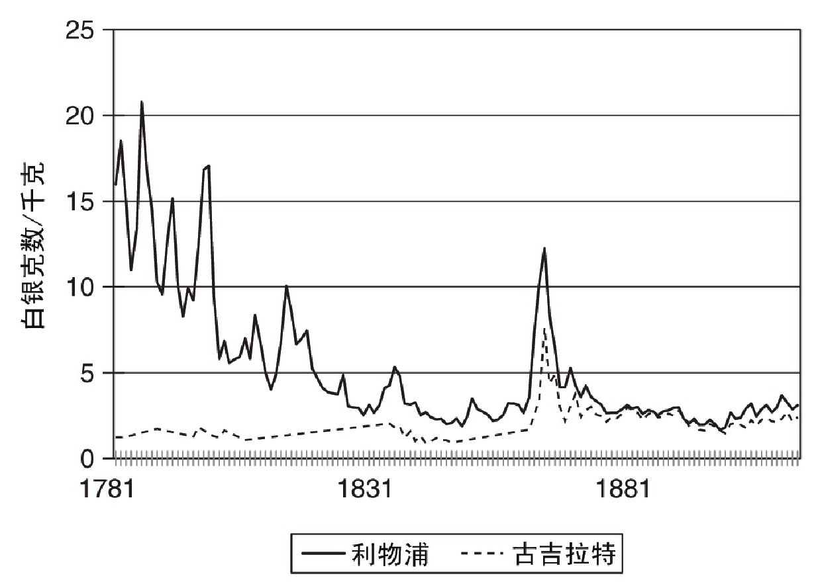

欧洲的东方分布着几个帝国。奥特曼帝国的土耳其人于1453年征服了君士坦丁堡，他们的统治范围从巴尔干半岛一直延伸到中东和北非。俄国沙皇统治着从波兰到海参崴的广袤领土。波斯帝国历经多个王朝，延续了数千年时间。在17世纪和18世纪，莫卧儿帝国的君王统治着印度的大部分领土。自公元3世纪起，日本天皇就已在位。南亚的某些国家，如柬埔寨和泰国，在很早以前就有了成熟的国家形式。这些帝国中，最强大的当属有着数千年历史的中国。
早在一千多年前，欧洲人就已经对亚洲的富庶有所耳闻，这也是他们试图通过海路前往亚洲的原因之一。马可·波罗于13世纪到过中国，他的游记风靡一时，哥伦布也购买了一本，并详加注释。法国神父兼汉学家杜赫德根据耶稣会传教士的描述，撰写了《中华帝国全志》（1736年），描绘了中华文明的灿烂景象。这本书广为流传，并引发了大规模的讨论。
不过，并非所有人都赞同富裕东方的说法。提出质疑的主要是几位古典经济学家，如亚当·斯密、罗伯特·马尔萨斯和卡尔·马克思。他们一致认为，相比东方帝国，欧洲更加富裕，并且经济前景更加美好。他们都认为中国处于落后状况，并且用各自偏爱的理论加以分析。在斯密看来，问题在于中国政府禁止对外贸易，并且私有财产在中国得不到保障。在马尔萨斯看来，普遍成婚导致了高生育率和低收入。在马克思看来，问题在于中国的社会结构还达不到资本主义阶段，无法维持个人的积极性。
过去有许多人接受了这些观点，但近年来，经济史研究中的加利福尼亚学派对此提出了挑战——之所以用这个名号，是因为这一学派的主要倡导者均为加利福尼亚大学的教授。根据他们的看法，中国的司法体系堪比欧洲，私有财产得到了保障；中国家庭把生育率控制在低水平，因而中国的人口增长速度并没有超过欧洲；此外，中国的商品市场以及土地、劳动力和资本市场的发展程度不逊于欧洲。欧亚大陆两端的生产率和生活水平大致相当。因此，工业革命之所以发生在欧洲，原因并不是制度或文化差异，而是因为欧洲大陆拥有现成的煤炭资源，并且在全球化进程中攫取了大量财富。
加利福尼亚学派对于中国和其他帝国的发展滞后给出了新的解释，他们的说法引起了广泛讨论。受到质疑最多的是，他们认为中国的发达地区（如长三角地区）的收入水平不亚于英格兰和荷兰（参见图3）。此外，人们逐渐接受了对于中国市场和制度的积极评价，因为对于其他帝国（如古罗马）的重新评价得出了类似结论。因此，加利福尼亚学派认为工业革命发生在英国是因为煤炭和商业，这一观点是正确的。纵览亚洲历史，不难发现亚洲国家缺少这样的诱因。
这些庞大的帝国在19世纪的日子都不好过。1857年起义之后，印度正式成为英国的殖民地。20世纪20年代，中国、奥斯曼帝国和俄国的皇帝都被赶下了皇位。19世纪初，这些庞大的帝国拥有世界上最大的制造业。到了19世纪末，它们的传统制造业已被破坏殆尽，却没有现代工业来接替。只有俄国和日本是例外，它们拥有一部分现代工业。
从滑铁卢战役到第二次世界大战，这段时间内的经济成败取决于三个因素：技术、全球化和国家政策。
西方的工业革命造成亚洲制造业难以为继，原因有两点：首先，欧洲的制造业生产效率更高，从而降低了生产成本。但在工资水平较低的其他地区，利用工业技术并不划算。比如，印度人不可能使用纺织机械来和英国人竞争，因为对于印度国内的纺织业来说，使用机械增加的资本成本将超过减少的劳动力成本。亚洲生产者只有两条路可走，要么寄希望于英国人改进纺织机，使得这些机械能大幅降低成本（最后的确如此），要么重新设计这些机械，使它们适应亚洲的生产条件（日本就是这么做的）。
其次，蒸汽机和铁路使国际竞争变得更加激烈。随着运输成本的下降，世界经济更加紧密地结合在一起。在这一过程中，使用动力机械的西方企业实力大增，其他地区采取手工生产的制造者远不是它们的对手，从卡萨布兰卡到广州都是如此——哪怕东西方的工资水平存在着巨大差异。随着制造业在亚洲和中东地区逐渐消亡，工人们回归农业生产，这些地区的出口产品变成了小麦、棉花、稻米和其他初级产品。换句话说，它们变成了当代的欠发达国家。
这些变化并非出于富裕国家的合谋，也不仅仅是因为殖民主义政策（虽然这的确是原因之一）。造成这一切的主因是经济学的一条根本原则——比较优势。根据这一理论，各个国家专事生产自己更富效率的某些商品，然后进行交易。它们出口自己生产的商品，并进口自己不擅长生产的其他商品。假设印度与世界其他地区隔绝开来，那么印度要想增加棉布的消费量，唯一的办法就是减少农业劳动人口，让更多的工人去从事纺织。这两项工作的劳动效率将决定，究竟小麦产量该减少多少，才能换取棉布的产量新增一米。如果可以进行国际贸易，并且在世界市场上，棉布相对于小麦的价格比率低于国内生产技术所隐含的比率，那么印度人就会发现，对于他们来说，出口小麦并进口棉布比自己生产棉布更为有利。换句话说，他们变成了农民，而不是制造者。这一调整以牺牲长远发展为代价，换来了短期繁荣。
在达伽马抵达印度的卡利卡特之前，欧洲和亚洲之间要付出巨大的代价才能互通有无。可以说，它们各自都“与世界其他地区隔绝开来”。随着横帆船、全球航行、蒸汽船、苏伊士运河、铁路、电报、巴拿马运河、汽车、飞机、集装箱船、电话、高速公路和互联网的发展，上述隔绝状况不复存在。交通和通讯的改善降低了国际交易的成本，将各个市场结合在一起，各国之间的竞争更加激烈。比较优势所发挥的功效变得更加强大，生产效率的相对差异对于国家财富的影响也变得日益显著。结果就是，第三世界沦为“不发达”地区。
自滑铁卢战役之后，国家政策是影响经济发展的第三个因素。为了应对英国廉价商品的挑战，美国和西欧都采取了标准发展策略，即理顺内部关系，建立外部关税，创办投资银行和推行教育普及。殖民地没法采取这一策略，因为它们的经济政策受到限制，必须为殖民国利益服务。独立国家有权选择发展道路，不过并非所有国家都为此而努力，也并非所有国家都能取得成功。
在印度和英国的棉纺织业发展史中，我们可以看到这些主题。工业革命期间，随着各种生产机械的完善，英国提高了棉布的生产效率。根据比较优势原理，英国制造业效率提高，而印度没有取得同等进步，这必然加强了英国棉布生产者的竞争力，同时削弱了印度生产者的竞争力。反过来，印度在农业生产方面的比较优势增加，而英国的比较优势则减少。比较优势的变化意味着，工业革命带来的不均衡的生产效率增长将会使得工业生产在英格兰取得进一步发展，而印度将出现去工业化的情况。事实正是如此。
比较优势的转变发生在运输成本下降的大背景下，这加剧了它的影响力。运输成本下降的原因是船只效率的提高，以及从欧洲到印度的海上航线更加激烈的竞争。18世纪，英国和荷兰的东印度公司统治了这条线路。虽然17世纪初这两家公司在成立时就打破了葡萄牙对胡椒贸易的垄断，造成欧洲的胡椒价格下降，但随后颁布的英国航海法案将荷兰人排除在英国控制的市场范围外，压制了竞争。第四次英荷战争（1780年—1784年）给了荷兰人最后一击：荷兰公司的实力大为削弱，只能眼看着自己的特许权于1800年到期。不过，英国公司最终还是在1813年失去了垄断地位。随之而来的竞争导致印度到欧洲航线的运输成本持续下降。
从英格兰和印度两地的棉布价格变化可以看到生产效率的不均衡发展和持续下降的运输成本所产生的影响。1812年，一群英国棉布制造商聚在一起，反对东印度公司继续垄断贸易。他们准备的一份备忘录上提到，同样纺织40支纱线，在印度成本是43便士/磅，但在英格兰成本只有30便士/磅。结论就是，只要允许竞争存在，印度就是英国产品巨大的潜在市场。他们的看法是正确的。但需要指出的是，十年前他们还没有这样说的底气，因为当时英国生产40支纱线的成本是60便士/磅。1802年的纺织技术在生产效率方面还不足以使它挫败印度。但1812年的机器可以做到。英国的机械继续得到改进。到1826年，40支纱线的价格已经下跌到16便士。既然可以在这一价位买到纱线，就连印度最贫困的妇女都不会亲自动手纺织了。因此，印度的棉纱生产一度消亡，直到19世纪70年代开始机械化生产，才得以恢复。
织布行业也出现了同样的情况，不过对于印度来说，结局没有那么惨淡。本书第四章已经提到，技术进步降低了英国白棉布的价格。在英格兰，从18世纪80年代中期开始，本土生产的布料总是比进口的印度布料更加便宜。不过，这两种布料的价格并没有出现明显差异，但购买者把两种布料当作彼此的替代品。因此，1790年之后英国布料价格的下降迫使印度布料价格也随之下降（参见图12）。
在我们统计的印度布料价格中，1805年至1818年这一时段没有可用数据。但就在那段时间，出现了两个重大变化。首先，印度与英格兰之间的价格变得十分接近。因为两个市场构成了一个整体，其中一个市场的发展必然影响到另一个。其次，英格兰的布料价格下降到低于印度布料价格的水平。印度至英格兰的布料出口逐渐停止，因为此时出口到英格兰已无利可图。相反，英格兰开始对印度出口布料。
这一变化对印度产生了重大影响。它从主要出口国变为主要进口国。印度的棉纺织业被破坏殆尽，所有的棉纱线都依靠进口。织布产量同样下降，虽然在规模减小、利润削减的情况下，手工织布的生产方式得以延续。在比哈尔，制造业的劳动力占总劳动力的比重从1810年的22%下降到1901年的9%。这段时间真是去工业化的重大时刻！

图12 棉布的真实价格
每个国家都在某些方面具备比较优势。印度在制造业方面失去了原有优势，但它在农业方面取得了新的优势，尤其是原棉。图13显示了1781年至1913年古吉拉特和利物浦两地的原棉价格变化。在18世纪，印度的棉花价格更低。随着美国南部的棉花种植面积扩大，英国的棉花价格开始下降。到19世纪30年代，英国和印度市场融为一体。一方面，棉纱和棉布市场的一体化导致价格下跌，并迫使印度生产商退出市场；另一方面，农产品市场的情况正好相反。原棉价格逐渐提高，导致种植面积扩大，印度开始向英国出口原棉，为纺织业提供原料。

图13 原棉的真实价格
1840年，英国议会下属的东印度产品特别委员会目睹了一场激烈的辩论，一方是代表麦克莱斯菲尔德地区的议员约翰·布罗克赫斯特先生，另一方是作为证人出席的罗伯特·蒙哥马利·马丁。布罗克赫斯特认为“印度的纺织业已经遭到破坏”，因此“印度现在是一个农业国，而不是一个制造业国家，之前从事制造业的人员现在都转移到农业生产中”。对于大英帝国的所作所为，马丁持批评态度。他回应道：
不管马丁的态度多么值得称赞，市场力量显然站在布罗克赫斯特一边，英国工业淘汰了印度的制造业。
19世纪，第三世界的大部分地区经历了类似印度纺织业的遭遇。不均衡的技术变迁，加上全球化的影响，推动了西方国家的工业化进程，同时又导致亚洲的传统制造业遭到破坏，出现去工业化的局面。哪怕是那些独立的国家，比如奥斯曼帝国，技术变迁和运输成本的下降依然将它们转变成现代的欠发达国家。在20世纪中期，亚洲经济发展问题被看作是“传统社会”向现代化国家转型的难题。事实上，这些国家的处境与传统毫无关系。欠发达状况是19世纪全球化以及西方工业发展的产物。
难道印度无法改变欠发达国家的命运，只能出口初级产品并进口工业产品吗？在手工生产消亡后，印度工业能否利用廉价劳动力来建立现代工厂以获得新的发展？可以用印度的发展史来试着回答这些问题，因为印度接受英国统治，受英国法律管辖，并且与英国保持自由贸易关系。这些因素对于印度的发展究竟有没有好处？
印度的确经历了一些工业发展。主要成就在于黄麻纤维制造业和棉纺织业。两者都利用了廉价劳动力。英国投资者为孟加拉地区的黄麻纤维工厂提供资金。到第一次世界大战时，印度已经达到世界上最大的黄麻纤维生产规模，它出口的产品将英国竞争者赶出了大多数市场。孟买的棉纺织业也开始繁荣。到1913年，这里每年加工的原棉数量达到36万吨，超过法国，但少于德国。不过，这些工业成就对于印度国家经济的影响可以忽略不计。1911年，黄麻纤维生产和棉纺织业雇用的劳动力只有50万人，还不到总劳动力的1%。印度经济依然是农业经济。
工业要想取得发展，就必须改变由比较优势主导的经济模式。民族主义的观点认为，印度应当采取标准发展政策，正是这些政策帮助西欧和美国赶超了英国，其中具体包括：建立外部关税，创办投资银行，理顺内部关系和推行教育普及。
殖民统治最引人关注的一点就是，上述政策的执行程度非常低。在19世纪，只有1%的印度人接受过学校教育，具备读写能力的成年人只占6%。关税很低，并且目的只是为了获取税收。没有银行政策来为工业发展提供资金。
印度政府所采取的措施体现了该国政策的局限性。它在旁遮普等地兴建水利设施，以增加农业出口。1857年起义之后，它又修建铁路，以便在全国范围内运送军队，同时将内陆的农业地区与沿海地区连成一体，以便出口初级产品。到第一次世界大战之前，印度铁路总里程达到6.1万公里，成为世界上最大的铁路网之一。铁路确实创造了全国性市场，因为货物可以以低廉的成本运到印度各地。
然而，印度在修建铁路的过程中错失了一个机会。铁路是一项巨大的工程，需要多种现代原料，比如铁轨和机车。大多数国家在修建铁路时，都会借此机会来发展这些产业（有些国家甚至从无到有，创立新的产业），它们采取的办法就是通过关税和政府采购，把订单交到当地企业手中。但印度殖民政府却想办法把订单交给了英国企业。英国对印度的工程材料出口大幅增加。但印度并没有得到附加利益，到了20世纪，印度才最终建立起钢铁业和工程制造业。
直到今天，印度、巴基斯坦和孟加拉国的大多数人依然从事农业生产。其他贫困国家的情况同样如此。不过，一些国家在19世纪时陷于贫困，如今却大有起色，它们采取的办法不仅有标准化发展策略，还有大推进式的发展模式，我们随后将讨论这些变化。